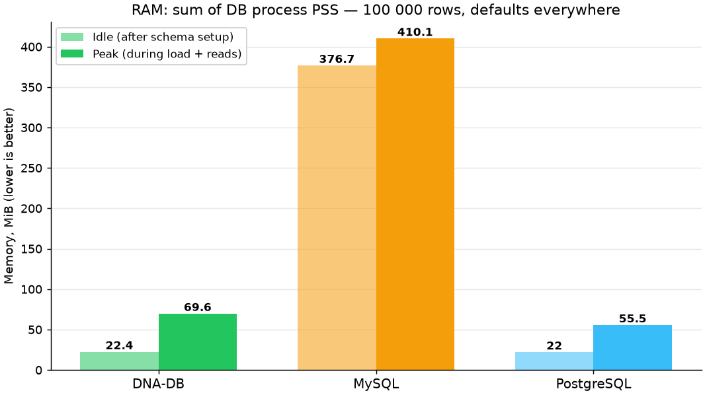
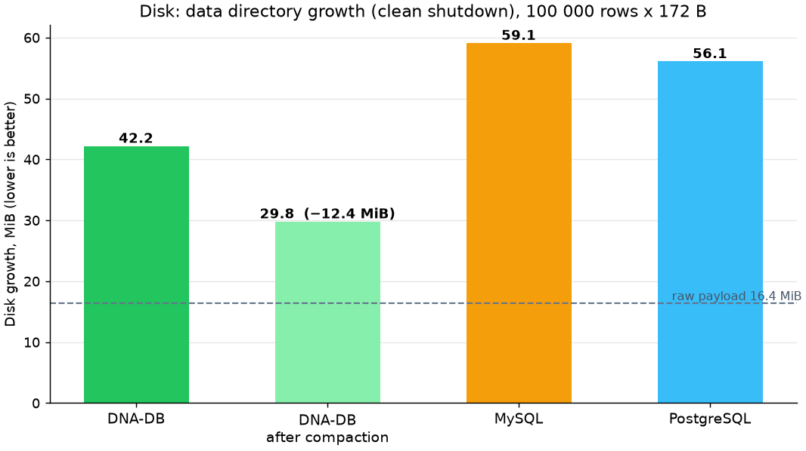
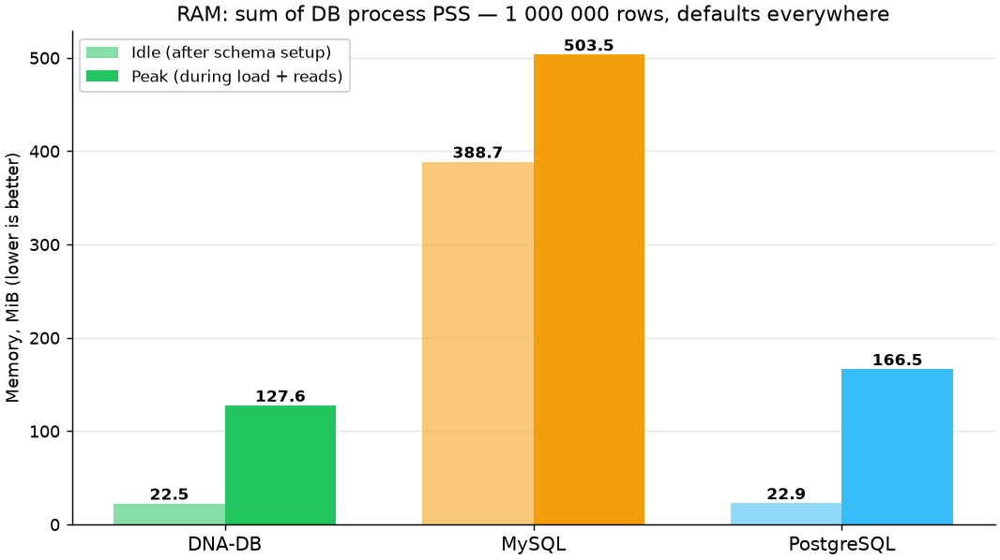
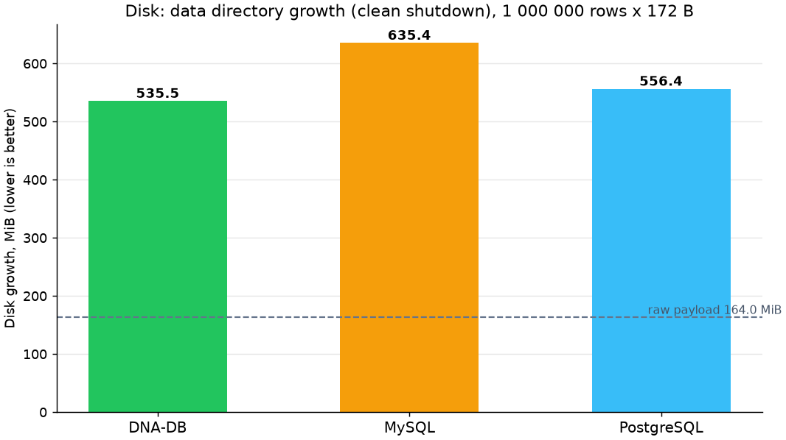
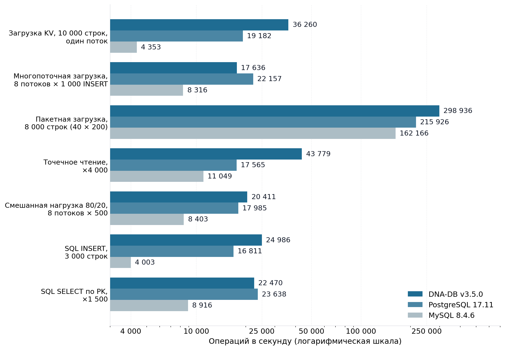
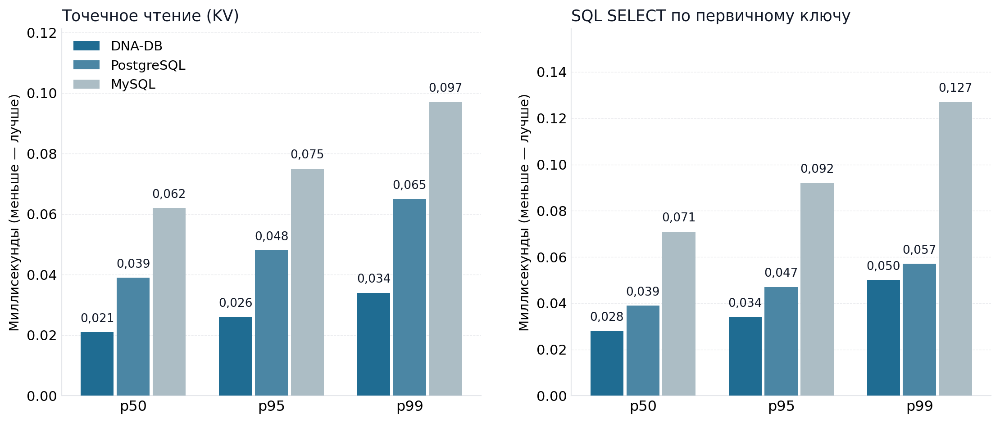
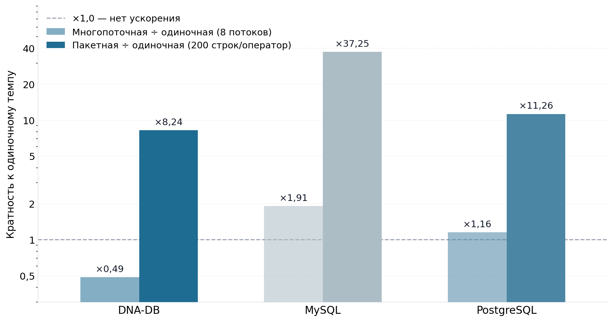
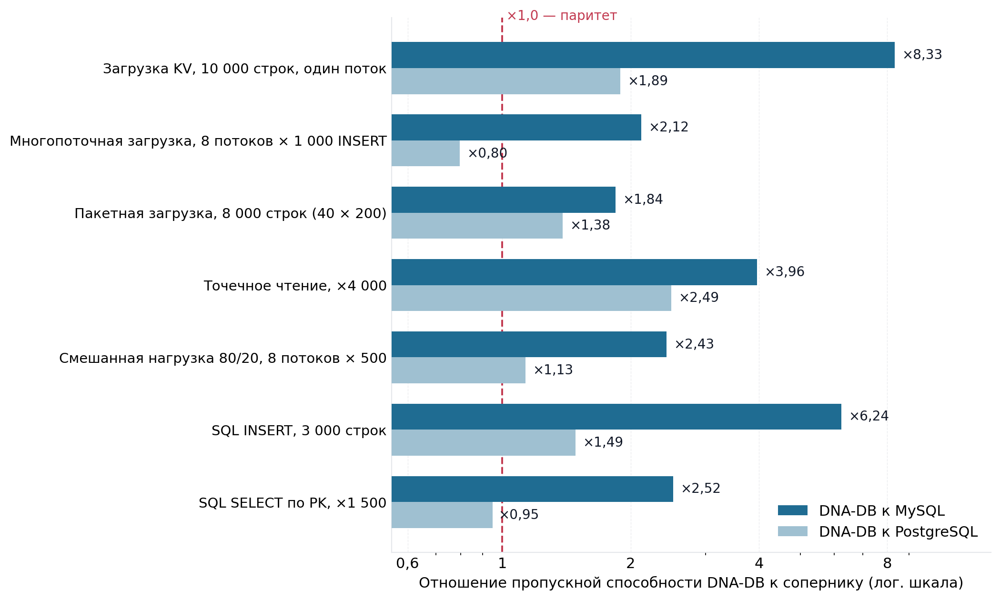
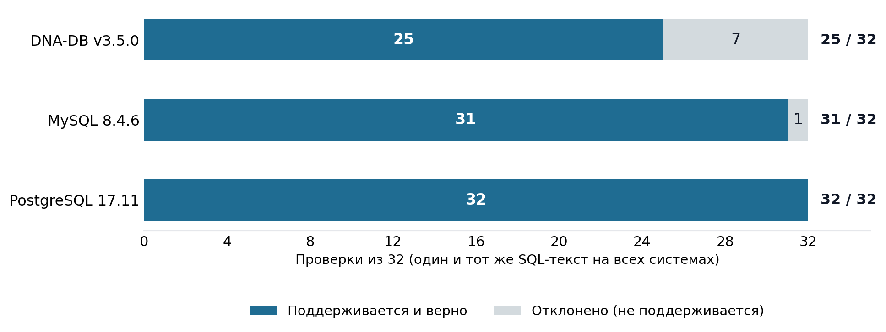
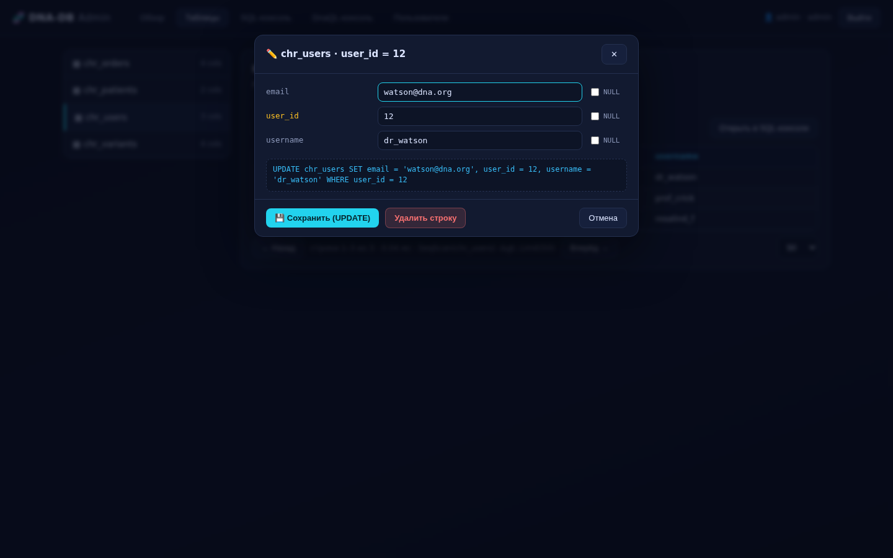

39 194 ops/s
запись по одной строке (p50 0,02 мс)
single-row insert (p50 0.02 ms)
СУБД общего назначения: хранит обычные цифровые данные — таблицы, строки, ключи. Принцип хранения подсмотрен у ДНК: четвертичный алфавит и 2-битная упаковка (4 основания в байте), комплементарная двойная нить, избыточность и самовосстановление. Один бинарник: DnaQL и SQL 32/32, совместимость по проводному протоколу PostgreSQL (pgwire), кворумный Raft, S3-тиринг и PITR, TLS 1.3 / Argon2id / XChaCha20, самовосстановление RS(4+2), Prometheus-метрики и Kubernetes-манифесты. Всё подтверждено 215 тестами, kill‑9-прогоном и сравнением с MySQL 8.4.6 и PostgreSQL 17.11. A general-purpose DBMS for ordinary digital data — tables, rows, keys. The storage principle is borrowed from DNA: a quaternary alphabet with 2-bit packing (4 bases per byte), a complementary dual strand, redundancy and self-repair. One binary: DnaQL plus a 32/32 SQL engine, PostgreSQL wire-protocol compatibility (pgwire), quorum Raft, S3 tiering and PITR, TLS 1.3 / Argon2id / XChaCha20, RS(4+2) self-healing, Prometheus metrics and Kubernetes manifests. Proven by 215 tests, a kill‑9 durability run and a comparison against MySQL 8.4.6 and PostgreSQL 17.11.
Три режима fsync (strict/relaxed/off), атомарные сегменты, bloom-фильтры, checkpoint и компакция.
Three fsync modes (strict/relaxed/off), atomic segment writes, bloom filters, checkpoint and compaction.
Пайплайны |>: ANALYZE SEQUENCE/LOCUS, GC_CONTENT, MELTING_TEMP, реверс-комплемент, транскрипция, перевод, нечёткий bitap-поиск.
Pipelines |>: ANALYZE SEQUENCE/LOCUS, GC_CONTENT, MELTING_TEMP, reverse-complement, transcription, translation, fuzzy bitap search.
Оператор пишет обычный SQL — SHOW STORAGE FOR users WHERE id = 5; показывает хромосому, локус, точный ключ и физическое представление каждого значения; sql2dnaql транслирует SQL в DnaQL с картой хранения; DnaQL-эквивалент — ANALYZE LOCUS users:5 |> STORAGE_MAP();. В панели — кнопка 🔬 у каждой строки и передача STORAGE_MAP в DnaQL-консоль одним кликом. Цепочки A/C/G/T читает машина, человеку — привычные значения.
The operator writes plain SQL — SHOW STORAGE FOR users WHERE id = 5; shows the chromosome, locus, exact key and physical representation of every value; sql2dnaql transpiles SQL into DnaQL with a storage map; the DnaQL equivalent is ANALYZE LOCUS users:5 |> STORAGE_MAP();. The panel adds a 🔬 button on every row and a one-click STORAGE_MAP hand-off to the DnaQL console. Machines read the A/C/G/T chains, humans get familiar values.
INNER/LEFT/RIGHT/FULL JOIN, UNION [ALL], CTE (WITH), скалярные и коррелированные подзапросы, EXISTS, оконные функции, UPSERT (ON CONFLICT), BEGIN/COMMIT/ROLLBACK, EXPLAIN.
INNER/LEFT/RIGHT/FULL JOIN, UNION [ALL], CTEs, scalar & correlated subqueries, EXISTS, window functions, UPSERT (ON CONFLICT), BEGIN/COMMIT/ROLLBACK, EXPLAIN.
psql, DBeaver, Grafana и любой PG-драйвер подключаются к порту 5432. Тот же движок и ACL, что и у нативного протокола.
psql, DBeaver, Grafana and any PG driver connect on port 5432. Same engine and ACL as the native protocol.
Кворумный кластер (3+ ноды): выборы, персистентный лог, репликация с откатом по conflict_index, редирект NOT_LEADER, failover < 2 c.
Quorum cluster (3+ nodes): elections, persistent log, replication with conflict-index rollback, NOT_LEADER redirects, failover < 2 s.
Демоушн сегментов в S3/MinIO/GCS (AWS SigV4, rustls) с Bloom-сайдкаром; консистентные снапшоты pitr --target и восстановление pitr --restore.
Segment demotion to S3/MinIO/GCS (AWS SigV4, rustls) with a Bloom sidecar; consistent snapshots via pitr --target and restore via pitr --restore.
ALTER TABLE ... ADD COLUMN — мгновенно, только метаданные, без блокировок и перезаписи строк.
ALTER TABLE ... ADD COLUMN is instant: metadata-only, no locks, no row rewrites.
TLS 1.2/1.3 и mTLS на всех слушателях, Argon2id, per-table ACL, lockout по IP/логину, XChaCha20-Poly1305 при хранении, trusted-proxy SSO.
TLS 1.2/1.3 and mTLS on every listener, Argon2id, per-table ACL, IP/username lockout, XChaCha20-Poly1305 at rest, trusted-proxy SSO.
Зеркало Strand B на внешнем диске, коды Рида–Соломона с CRC на блоки, scrubber, doctor, ремонт на чтении, откат WAL.
Strand B mirror on an external disk, Reed–Solomon with per-block CRC, scrubber, doctor, repair-on-read, WAL rollback.
phpMyAdmin-подобная: KPI-дашборд с «Данными на диске», браузер строк с 🔬-картой хранения, SQL- и DnaQL-консоли с планом и блоком SQL → DnaQL, онлайн-компакция с размером до/после и историей запусков, пользователи и ACL, CSP-hardening.
phpMyAdmin-style: KPI dashboard with a "data on disk" card, row browser with a 🔬 storage map, SQL & DnaQL consoles with plans and an SQL → DnaQL block, online compaction with before/after sizes and a run history, users & ACL, CSP-hardened.
GET /metrics в формате Prometheus 0.0.4: health, lesion found/repaired/unrecoverable, memtable, сегменты, плюс метрики компакции (v4.1) — dnadb_compactions_total, байты до/после/сэкономлено, длительность и метка времени последнего запуска, dnadb_data_dir_bytes. CRD DnaDbCluster, StatefulSet, ServiceMonitor.
GET /metrics in Prometheus 0.0.4 format: health, lesion found/repaired/unrecoverable, memtable, segments, plus compaction metrics (v4.1) — dnadb_compactions_total, bytes before/after/saved, last-run duration and timestamp, dnadb_data_dir_bytes. CRD DnaDbCluster, StatefulSet, ServiceMonitor.
CLI shell (TLS/mTLS), rotate-key без простоя, 16 python-скриптов: smoke, security, kill‑9, chaos, трёхсторонний бенчмарк против MySQL/PostgreSQL.
CLI shell (TLS/mTLS aware), zero-downtime rotate-key, 16 python scripts: smoke, security, kill‑9, chaos, three-way MySQL/PostgreSQL benchmark.
Одинаковая нагрузка, ключи и последовательность RNG на всех трёх системах, у каждой — durability по умолчанию. Одна машина (Debian 13, 2 vCPU), один клиент. Прогон v3.5.0 от 2026-10-31, методика scripts/bench_compare.py.
Identical workload, keys and RNG sequence on all three systems, each at its default durability. Same machine (Debian 13, 2 vCPU), one client. v3.5.0 run dated 2026-10-31, methodology scripts/bench_compare.py.
| ФазаPhase | DNA-DB v3.5.0 | MySQL 8.4.6 | PostgreSQL 17.11 |
|---|---|---|---|
| Запись по одной строке (ack на каждую)Single-row insert (ack per row) | 36 260 | 4 353 | 19 182 |
| Параллельная запись, 8 потоковMultithreaded insert, 8 threads | 17 636 | 8 316 | 22 157 |
| Пакетный INSERT (200 строк × 40)Batched INSERT (200 rows × 40) | 298 936 | 162 166 | 215 926 |
| Точечное чтение по ключуPoint read by key | 43 779 | 11 049 | 17 565 |
| Смешанная 80/20 (8 потоков)Mixed 80/20 (8 threads) | 20 411 | 8 403 | 17 985 |
| SQL INSERT (3 000 строк)SQL INSERT (3 000 rows) | 24 986 | 4 003 | 16 811 |
| SQL SELECT по PK (×1 500)SQL SELECT by PK (×1 500) | 22 470 | 8 916 | 23 638 |
| Неверных значений при проверкеWrong values on verification | 0 | 0 | 0 |
rows/s либо ops/s, чем больше — тем лучше. DNA-DB: --sync strict (fsync на каждый ack). MySQL: innodb_flush_log_at_trx_commit=1. PostgreSQL: synchronous_commit=on. Полная методика: DB_COMPARISON_RU.md.
rows/s or ops/s, higher is better. DNA-DB: --sync strict (fsync per ack). MySQL: innodb_flush_log_at_trx_commit=1. PostgreSQL: synchronous_commit=on. Full methodology: DB_COMPARISON.md.
Прогон v4.0.0 от 2026-10-31 выполнен на другой машине (8 потоков), поэтому напрямую с таблицей v3.5.0 не сопоставляется: та же методика scripts/bench_compare.py, числа MySQL/PostgreSQL в нём не участвуют. Сырые данные: bench_compare_results_v400_linux.json.
The v4.0.0 run dated 2026-10-31 used a different machine (8 threads), so it is not directly comparable to the v3.5.0 table: same scripts/bench_compare.py methodology, MySQL/PostgreSQL did not take part. Raw data: bench_compare_results_v400_linux.json.
📄 Полный отчёт о сравнении (PDF, 13 стр., RU)Full comparison report (PDF, 13 pages, RU)
Подкоманда dna-db-core mysqld слушает порт 3306 и говорит на протоколе MySQL 4.1: handshake v10, mysql_native_password, text и binary протоколы, COM_STMT_PREPARE/EXECUTE, multi-statement, реальные errno (1045/1062/1146/1054/1205). Любая CMS, фреймворк или драйвер — mysqli, PDO, PyMySQL, Connector/Py — подключаются как к обычному MySQL и работают с одним и тем же DNA-хранилищем. SQL от клиента транслируется в DNAQL на лету, ответы возвращаются в MySQL-формате.
The dna-db-core mysqld subcommand listens on port 3306 and speaks the MySQL 4.1 wire protocol: handshake v10, mysql_native_password, text and binary resultsets, COM_STMT_PREPARE/EXECUTE, multi-statement, real errno (1045/1062/1146/1054/1205). Any CMS, framework or driver — mysqli, PDO, PyMySQL, Connector/Py — connects as to a regular MySQL server and works against the same DNA storage. Client SQL is translated to DNAQL on the fly, replies come back in MySQL format.
# один запуск — и DNA-DB выглядит как MySQL: ./dna-db-core mysqld --data-dir /var/lib/dnadb --port 3306 --wordpress --user wp:секрет # WordPress подключается штатным mysqli: define( 'DB_NAME', 'wordpress' ); define( 'DB_USER', 'wp' ); define( 'DB_PASSWORD', 'секрет' ); define( 'DB_HOST', '127.0.0.1:3306' );
Одинаковый SQL через pymysql (text-протокол, как wpdb), одинаковая схема wp_posts/wp_options, 8 000 операций на фазу, одна машина. Методика: scripts/cms_wire_bench.py. Память — максимум RSS процесса демона в фазе.
Identical SQL over pymysql (text protocol, like wpdb), identical wp_posts/wp_options schema, 8,000 ops per phase, same machine. Methodology: scripts/cms_wire_bench.py. Memory is the daemon's max RSS per phase.
| ФазаPhase | DNA-DB mysqld | MariaDB 11.8.6 | ОтношениеRatio |
|---|---|---|---|
| INSERT по одной строке (autocommit)Single-row INSERT (autocommit) | 15 682 ops/s | 13 092 ops/s | ×1,20 |
| Пакетный INSERT (100 строк)Batched INSERT (100 rows) | 125 083 ops/s | 216 268 ops/s | ×0,58 |
| SELECT по PK (×8 000)SELECT by PK (×8,000) | 8 046 ops/s | 8 889 ops/s | ×0,91 |
| SELECT по вторичному индексуSELECT by secondary index | 8 647 ops/s | 8 290 ops/s | ×1,04 |
| UPDATE по PK (×8 000)UPDATE by PK (×8,000) | 11 731 ops/s | 12 611 ops/s | ×0,93 |
| WordPress-микс (SELECT+UPSERT опций)WordPress mix (options SELECT+UPSERT) | 5 385 ops/s | 4 701 ops/s | ×1,15 |
| Память демона (пик RSS в фазах)Daemon RAM (peak RSS across phases) | 8–13 MiB | 118–123 MiB | ~×10 |
Сырые данные: wire_bench_results.json. Безопасность wire-поверхности: scripts/mysqlwire_security_test.py — 24/24.
Raw data: wire_bench_results.json. Wire-surface security: scripts/mysqlwire_security_test.py — 24/24.
Один и тот же детерминированный датасет во всех трёх СУБД — 100 000 и 1 000 000 строк (ключ + значение 160 байт, seed 42, как в основном бенчмарке), настройки по умолчанию у всех. Память — суммарный PSS всех процессов СУБД: разделяемая память делится пропорционально, поэтому PostgreSQL со своими shared_buffers учитывается честно. Диск — прирост каталога данных после корректной остановки, включая WAL и binlog. Оба масштаба измерены в одном прогоне GitHub Actions; между ними базы сбрасывались, а журналы усекались. The same deterministic dataset in all three DBMS — 100,000 and 1,000,000 rows (key + 160-byte value, seed 42, as in the main benchmark), default settings everywhere. Memory is the summed PSS of all DBMS processes: shared memory is split proportionally, so PostgreSQL with its shared_buffers is counted fairly. Disk is the data directory growth after a clean shutdown, including WAL and binlog. Both scales were measured in a single GitHub Actions run; between them the databases were dropped and the logs truncated.
| МетрикаMetric | DNA-DB 4.0.0 | DNA-DB после компакцииDNA-DB after compaction | MySQL 8.0.46 | PostgreSQL 16.15 |
|---|---|---|---|---|
| RAM в покое (сумма PSS процессов)Idle RAM (sum of process PSS) | 22,422.4 | — | 376,7376.7 | 22,022.0 |
| RAM в пике — загрузка + точечные чтенияPeak RAM — load + point reads | 69,669.6 | — | 410,1410.1 | 55,555.5 |
| Место на диске — прирост, MiBDisk growth, MiB | 42,242.2 | 29,829.8 | 59,159.1 | 56,156.1 |


| МетрикаMetric | DNA-DB 4.0.0 | DNA-DB после компакцииDNA-DB after compaction | MySQL 8.0.46 | PostgreSQL 16.15 |
|---|---|---|---|---|
| RAM в покое (сумма PSS процессов)Idle RAM (sum of process PSS) | 22,522.5 | — | 388,7388.7 | 22,922.9 |
| RAM в пике — загрузка + точечные чтенияPeak RAM — load + point reads | 127,6127.6 | — | 503,5503.5 | 166,5166.5 |
| Место на диске — прирост, MiBDisk growth, MiB | 535,5535.5 | 297,9297.9 | 635,4635.4 | 556,4556.4 |


Всё в MiB, меньше — лучше. Методика: пик — максимум суммы PSS при опросе каждые 50 мс во время загрузки (одиночные вставки, ack на каждую) и точечных чтений — 4 000 чтений на 100 000 строк, 20 000 на 1 000 000; диск — от пустого сервера к загруженному после корректной остановки: у MySQL в каталоге лежат binlog и undo, у PostgreSQL — WAL, у DNA-DB — WAL и сегменты RS(4+2). «После компакции» — офлайн-компакция DNA-DB (dna-db-core compact: checkpoint + слияние всех сегментов в один, удаление затёртых версий и использованных надгробий); для MySQL/PostgreSQL аналогичной офлайн-компакции в замере нет. Оба масштаба — один прогон GitHub Actions, ubuntu-24.04: MySQL 8.0.46 и PostgreSQL 16.15 из apt, DNA-DB 4.0.0 (--sync strict); между масштабами базы удалялись, binlog усекался (RESET MASTER), PostgreSQL перезапускался — baseline каждого замера чистый. Сырые данные: resources_compare_linux.json (100k) и resources_compare_linux_1m.json (1M); воспроизведение: Actions → «Resources (RAM & disk)», скрипт scripts/measure_resources.py.
All values in MiB, lower is better. Methodology: peak = max of the PSS sum sampled every 50 ms during the load (single inserts, ack per row) plus point reads — 4,000 reads at 100,000 rows, 20,000 at 1,000,000; disk = from an empty server to the loaded one after a clean shutdown — MySQL keeps binlog and undo files in the directory, PostgreSQL keeps WAL, DNA-DB keeps WAL and RS(4+2) segments. “After compaction” = the DNA-DB offline compaction (dna-db-core compact: checkpoint + merging all segments into one, dropping shadowed versions and consumed tombstones); no equivalent offline compaction was measured for MySQL/PostgreSQL. Both scales in one GitHub Actions run, ubuntu-24.04: MySQL 8.0.46 and PostgreSQL 16.15 from apt, DNA-DB 4.0.0 (--sync strict); between the scales the databases were dropped, the binlog truncated (RESET MASTER) and PostgreSQL restarted, so each measurement starts from a clean baseline. Raw data: resources_compare_linux.json (100k) and resources_compare_linux_1m.json (1M); reproduce via Actions → “Resources (RAM & disk)”, script scripts/measure_resources.py.
Пять диаграмм из полного отчёта: пропускная способность, задержки, масштабирование, ускорение относительно MySQL/PostgreSQL и соответствие SQL. Клик — увеличение. Five diagrams from the full report: throughput, latency, scaling, speed-up vs MySQL/PostgreSQL and SQL conformance. Click to zoom.





184 unit + 32 SQL-фичи + 13 recovery + Raft + tiering + pgwire.
184 unit + 32 SQL features + 13 recovery + Raft + tiering + pgwire.
TEST_RESULTS_RU.mdКанонический прогон: 0 unsupported, 0 mismatch, 0 error — включая RIGHT/FULL JOIN, UNION, CTE, UPSERT, оконные функции.
Canonical run: 0 unsupported, 0 mismatch, 0 error — incl. RIGHT/FULL JOIN, UNION, CTE, UPSERT, window functions.
SQL_FEATURES_RU.mdЗаписей потеряно или испорчено после SIGKILL: ноль из 123 408 подтверждённых — WAL replay и ремонт torn-write восстановили всё до последней записи. Ноль здесь — идеальный результат (см. KILL9-отчёт: Missing: 0, Corrupt: 0).
Records lost or corrupted after SIGKILL: zero out of 123,408 acknowledged — WAL replay and torn-write repair recovered every last one. Zero here is the perfect result (see the KILL9 report: Missing: 0, Corrupt: 0).
KILL9_TEST_RESULT_v350.txt60 повреждённых секторов офлайн и на живом сервере, 300 000 проверок ключей, 0 потерь; пере-повреждение честно помечено UNREPAIRABLE.
60 damaged sectors offline and under a live server, 300,000 key verifications, 0 losses; over-damage honestly reported UNREPAIRABLE.
chaos_results_v350.txtАутентификация, pre-auth guard, CRUD, кадры 1 MiB, SQL/DnaQL, checkpoint, восстановление после kill.
Auth, pre-auth guard, CRUD, 1 MiB frames, SQL/DnaQL, checkpoint, hard-kill recovery.
smoke_test_results_v350.txtСлучайный bootstrap, лимит глубины парсера, slowloris-дедлайн, отказ вторых instance и doctor на живой БД.
Random bootstrap, parser depth limit, slowloris deadline, second-instance & live-doctor refusals.
security_smoke_v350.txtHandshake, VERSION(), DDL/DML, SELECT, оконные функции через pgwire, NULL, ErrorResponse, BEGIN/ROLLBACK/COMMIT.
Handshake, VERSION(), DDL/DML, SELECT, window functions over pgwire, NULL, ErrorResponse, BEGIN/ROLLBACK/COMMIT.
tests/test_pgwire_client.pyWordPress 7.1.4 (wp-cli) 21/21 и WooCommerce 11.2.1 (HPOS) 12/12 артефактов через штатный mysqli на порт 3306 — идентично MariaDB.
WordPress 7.1.4 (wp-cli) 21/21 and WooCommerce 11.2.1 (HPOS) 12/12 artifacts over stock mysqli on port 3306 — identical to MariaDB.
E2E_WP_MYSQLWIRE_REPORT.mdSQL-инъекции через параметры, brute force, malformed-пакеты, stacked queries, errno-проброс — сервер жив и данные целы.
Parameterized SQL injection, brute force, malformed packets, stacked queries, errno propagation — server alive, data intact.
MYSQLWIRE_SECURITY_REPORT.md3 ноды: выборы, репликация 3/3, отказ лидера — новый лидер за 1,05 c (SLA < 2 c), ноль потерь закоммиченных записей.
3 nodes: elections, 3/3 replication, leader loss — new leader in 1.05 s (SLA < 2 s), zero loss of committed writes.
tests/raft_cluster.rs



# Rust 1.75+ git clone https://github.com/nsmykh70-creator/dna-db-core.git cd dna-db-core && cargo build --release # запуск: TCP-протокол на 9999, веб-панель на 8080 ./target/release/dna-db-core serve --data-dir ./dna_data --port 9999 --admin-port 8080 # панель: https://127.0.0.1:8080/ — TLS включён всегда, # пароль администратора генерируется случайно и печатается один раз
# CLI shell поверх TLS (самоподписанный сертификат сервера): ./target/release/dna-db-core shell --tls-ca ./dna_data/tls/cert.pem # psql и любой PG-драйвер — через pgwire (PostgreSQL Wire Protocol v3): ./target/release/dna-db-core serve --data-dir ./dna_data --admin-port 8080 --pgwire-port 5432 psql "host=127.0.0.1 port=5432 user=admin dbname=dna" -c "SELECT VERSION();"
# 1) запустить DNA-DB как MySQL-сервер на :3306 ./dna-db-core mysqld --data-dir /var/lib/dnadb --port 3306 --wordpress --user wp:секрет # 2) в wp-config.php указать DB_HOST 127.0.0.1:3306 (см. секцию MySQL-режима) # 3) установить WordPress штатно — dbDelta, wp-cli и плагины работают как есть wp core install --url=http://example.com --admin_user=admin --skip-email # любой MySQL-клиент тоже работает: mysql -h 127.0.0.1 -P 3306 -u wp -p -e "SELECT CONCAT(UPPER('днк'), '-', LOWER('ТЕСТ'));"
Пошаговое руководство: docs/CMS_MYSQLWIRE_GUIDE_RU.mdStep-by-step guide: docs/CMS_MYSQLWIRE_GUIDE_RU.md
-- CTE + JOIN WITH top AS (SELECT dept, COUNT(*) AS n FROM users GROUP BY dept) SELECT u.name, t.n FROM users u JOIN top t ON u.dept = t.dept; -- RIGHT / FULL OUTER JOIN SELECT name, total FROM users RIGHT JOIN orders ON users.id = orders.uid; SELECT name, total FROM users FULL OUTER JOIN orders ON users.id = orders.uid; -- UNION и оконные функции SELECT dept FROM users WHERE id = 1 UNION SELECT dept FROM users WHERE id = 2; SELECT name, RANK() OVER (PARTITION BY dept ORDER BY total DESC) FROM users; -- UPSERT и транзакция (один атомарный WAL-кадр на COMMIT) INSERT INTO kv (k, v) VALUES ('chr1', 3001) ON CONFLICT (k) DO UPDATE SET v = EXCLUDED.v; BEGIN; UPDATE accounts SET bal = bal - 100 WHERE id = 1; UPDATE accounts SET bal = bal + 100 WHERE id = 2; COMMIT;
-- анализ и реверс-комплемент ANALYZE SEQUENCE 'CGCGCGATCGATCGCGC' |> REV_COMP(); -- джойн двух хромосом по комплементарным ID FROM chr_a |> LINK chr_b VIA COMPLEMENT(b_id) |> EMIT *;
Полная грамматика: DNAQL_SPEC.md, руководство: DNAQL_MANUAL_RU.mdFull grammar: DNAQL_SPEC.md
# три терминала (id уникален, каждый со своим data-dir): ./target/release/dna-db-core cluster --id 0 --port 9500 --data-dir ./dna_node0 \ --peers 0=127.0.0.1:9500,1=127.0.0.1:9501,2=127.0.0.1:9502 ./target/release/dna-db-core cluster --id 1 --port 9501 --data-dir ./dna_node1 \ --peers 0=127.0.0.1:9500,1=127.0.0.1:9501,2=127.0.0.1:9502 ./target/release/dna-db-core cluster --id 2 --port 9502 --data-dir ./dna_node2 \ --peers 0=127.0.0.1:9500,1=127.0.0.1:9501,2=127.0.0.1:9502 # запись принимается лидером; при его отказе новый лидер выбирается за <2 c, # не-лидер отвечает NOT_LEADER с адресом текущего.
# Prometheus-метрики (панель-порт): curl -k https://127.0.0.1:8080/metrics | head # консистентный снапшот и восстановление на момент времени: ./target/release/dna-db-core pitr --data-dir ./dna_data --target ./snaps/t1 ./target/release/dna-db-core pitr --restore --data-dir ./dna_data --target ./snaps/t1 # ротация ключа шифрования без простоя (включая зеркало Strand B): ./target/release/dna-db-core rotate-key --data-dir ./dna_data \ --new-key-file /secure/dna-new.key --mirror-dir /mnt/dna_mirror
cargo test --release # 215 тестов python3 scripts/smoke_test.py # живой smoke протокола python3 scripts/chaos_test.py # хаос-тест самовосстановления python3 scripts/bench_compare.py # трёхсторонний бенчмарк (нужны MySQL/PG)
Полное описание сервера, TLS, ACL и протокола: README_RU.md · PROTOCOL.mdFull server, TLS, ACL and protocol reference: README.md · PROTOCOL.md